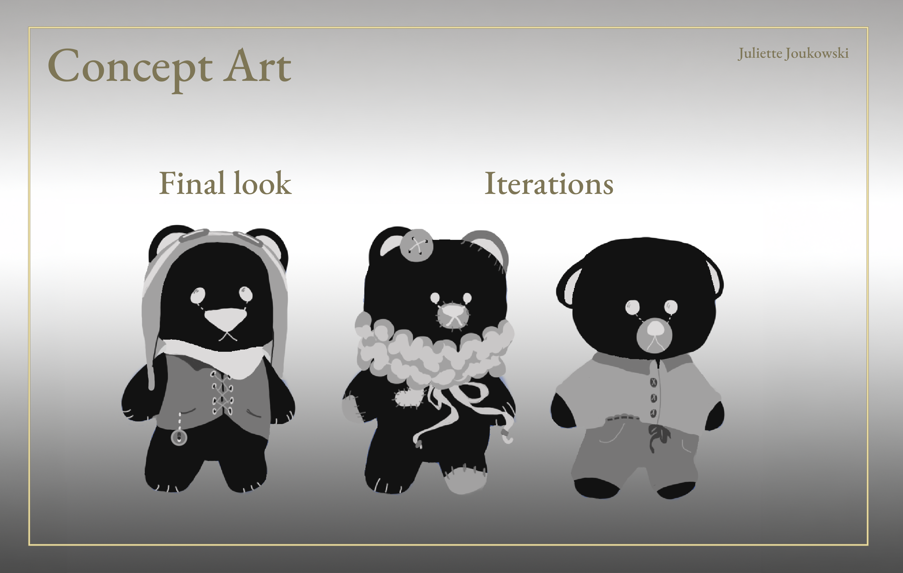
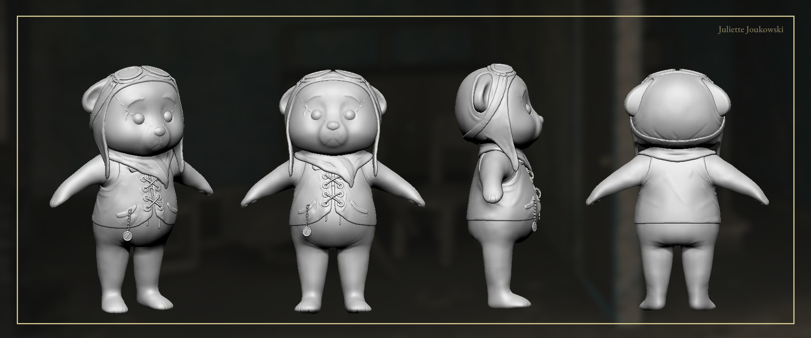
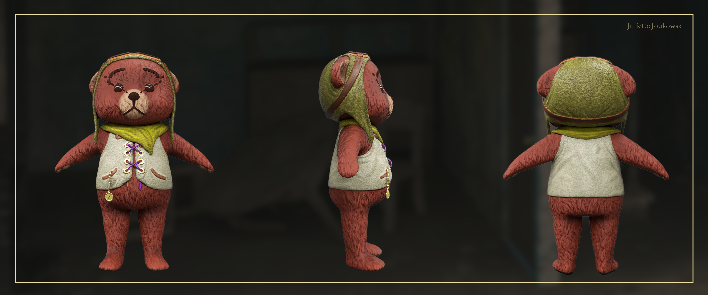
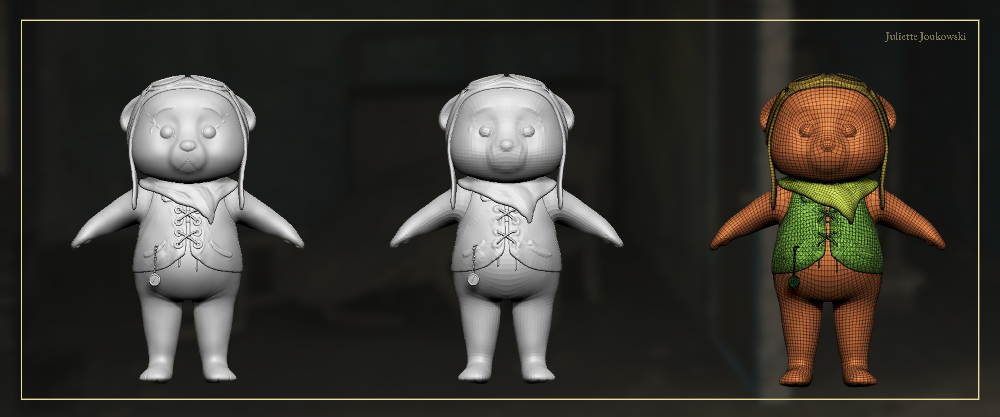
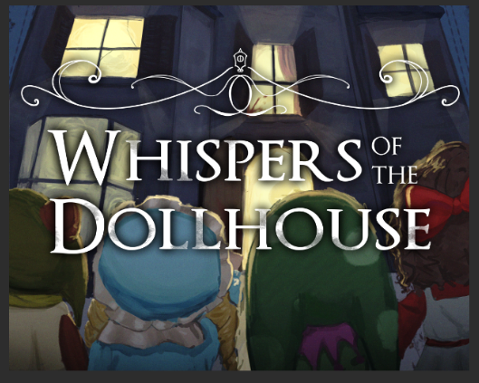
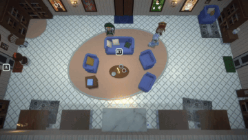

Concept to Final Design
This Teddy Bear is another original character created for Whispers of the Dollhouse, the same local couch-multiplayer school project as Voodoo Ragdoll. A few outfit iterations were explored before settling on this worn, adventurer-style bear with a stitched vest and a small charm.

High Poly Sculpt
Full turnaround of the high poly sculpt, modeled in ZBrush. The fur, stitched vest and floppy ears were sculpted to keep a soft, huggable silhouette.

Texturing
Final PBR texturing created in Substance 3D Painter, with hand-placed fur strokes, leather straps and a slightly faded, well-loved look.

Retopology & Optimization
High poly, low poly and wireframe comparison. The mesh was retopologized and optimized for real-time use in the game.

In-Game Integration
Like Voodoo Ragdoll, the Teddy Bear was integrated into Whispers of the Dollhouse using Unity, playable in local split-screen multiplayer.
